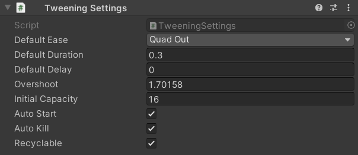

Settings
The Tweening package provides a few global settings that can be modified. Settings can either be changed through a static class, or through a mono behavior. The following settings are available:
- defaultEase: The default Ease assigned to every tween (Ease.QuadOut). The ease used by a tween can be set manually if desired.
- defaultDuration: The default amount of seconds a tween takes to complete (
0.3). The duration of a tween can be set manually if desired. - defaultDelay: The default amount of seconds before every tween starts (
0). The delay of a tween can be set manually if desired. - overshoot: The overshoot value used in easing functions (
1.70158). - initialCapacity: The initial amount of tweens memory is allocated for when the system starts (
16). Additional memory will be allocated as needed. - autoStart: Automatically starts tweens after being created (
true). This is can be turned on/off manually per tween if desired. - autoKill: Automatically kills tweens after being completed (
true). This is can be turned on/off manually per tween if desired. - recyclable: Keeps tweens in memory to be re-used after being killed (
true). This can be turned on/off manually per tween if desired.
Changing settings with code
Tweening settings can be changed through the static class Settings.
Below are all of the settings and their default values:
Settings.defaultEase = Ease.QuadOut;
Settings.defaultDuration = 0.3f;
Settings.defaultDelay = 0.0f;
Settings.overshoot = 1.70158f;
Settings.initialCapacity = 16;
Settings.autoStart = true;
Settings.autoKill = true;
Settings.recyclable = true;
Changing settings in the editor
The Tweening package includes a mono behaviour called TweeningSettings that can be added to your scene. This is generally used to provide a simple interface for changing settings in the Unity editor rather than through code. You can, of course, still use this behavior to change settings at runtime if desired.
